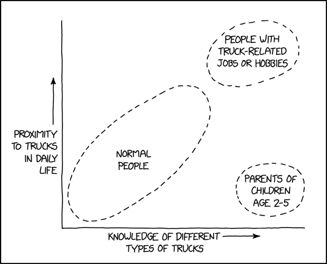
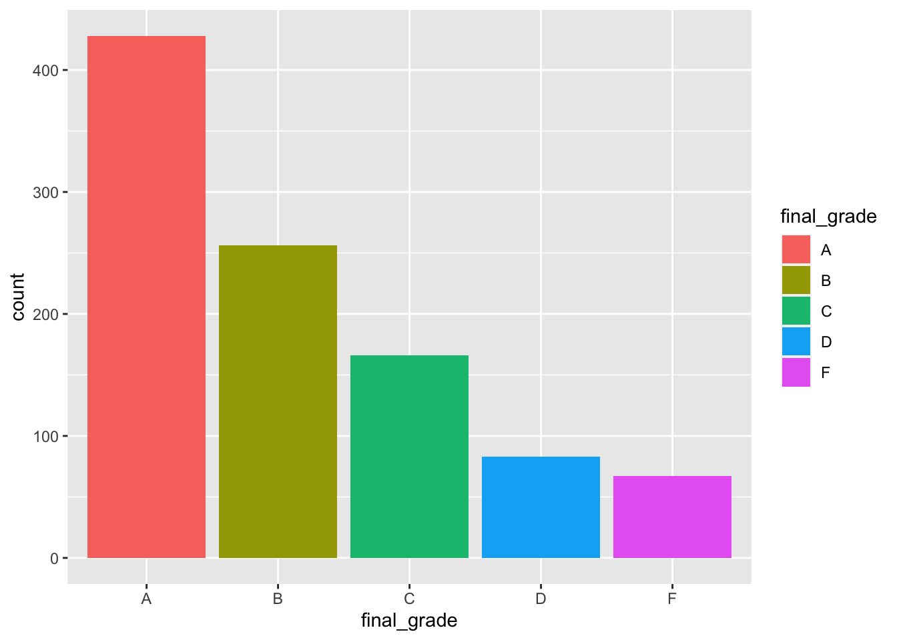

Chapter 3 A table app
Our first app will be a basic app with a table, a graph, and a single drop down selector. To build this we will use the {DT} library https://rstudio.github.io/DT/.
3.1 Just a table
Lets start with building a data set to visualize. The data set we are going to build is the grade data for a course with 10 sections.
library(tidyverse)
library(charlatan)
library(scales)
grades <- tibble(name = ch_name(1000),
final_score = number(rbeta(1000, 5, 1),accuracy = .01),
section = sample(1:10, 1000, replace = TRUE)) %>%
mutate(
final_grade = case_when(
final_score < .60 ~ 'F',
final_score >= .60 & final_score < .70 ~ 'D',
final_score >= .70 & final_score < .80 ~ 'C',
final_score >= .80 & final_score < .90 ~ 'B',
final_score >= .90 ~ 'A'
)
) %>%
mutate(section = str_pad(section, 2, 'left', '0'))glimpse(grades)## Rows: 1,000
## Columns: 4
## $ name <chr> "Ricki Wuckert", "Mr. Dominick Corkery", "Lish Doyle", "D…
## $ final_score <chr> "0.84", "0.93", "0.98", "0.81", "0.98", "0.83", "0.80", "…
## $ section <chr> "09", "01", "05", "03", "07", "04", "05", "09", "02", "04…
## $ final_grade <chr> "B", "A", "A", "B", "A", "B", "B", "F", "A", "B", "B", "A…The basic framework for a Shiny app looks like this
library(shiny)
ui <- fluidPage( )
server <- function(input, output, session) { }
shinyApp(ui, server)Let’s first just throw a basic data table into the app.
library(shiny)
library(DT)
ui <- fluidPage(
DT::dataTableOutput('table')
)
server <- function(input, output, session) {
output$table <- DT::renderDataTable({
datatable(grades)
})
}
shinyApp(ui, server)This gives us an app looking like this.

Which is great, but we can a lot better with just a few more lines of code.
For the next few steps, I will just include the relevant portions of the app script.
3.2 Some structure
First we will add a well panel with a nice title and a paragraph that explains what our application does. When I am first building an app, I often fill this space with the {lorem} package.
ui <- fluidPage(
wellPanel( # New lines
h3("My table app"), #
lorem::ipsum(paragraphs = 1, sentences = 6) #
),
DT::dataTableOutput('table')
)

Next we are going to center the table. We do this by creating a column call to contain the table. Our column element which contains the table will be 10 wide, and we will offset it by 1.
ui <- fluidPage(
wellPanel(
h3("My table app"),
lorem::ipsum(paragraphs = 1, sentences = 6)
),
fluidRow(
column(10, offset = 1, # <==================================================
DT::dataTableOutput('table')
)
)
)
We can also use custom CSS in the column element.
ui <- fluidPage(
br(),
wellPanel(
h3("My table app"),
lorem::ipsum(paragraphs = 1, sentences = 6)
),
fluidRow(
column(10, offset = 1, style = 'background-color:red', # <==================
DT::dataTableOutput('table')
)
)
)

3.3 Add a graph!

Next we are going to add a graph to our app. We will make a basic bar graph showing the distribution of grades in the course. Here is the {ggplot2} code we will use to make the graph.
ggplot(grades, aes(final_grade, fill = final_grade)) + geom_histogram(stat = 'count')
The code for the app will look like this
ui <- fluidPage(
br(),
wellPanel(
h3("My table app"),
lorem::ipsum(paragraphs = 1, sentences = 6)
),
fluidRow(
column(10, offset = 1,
DT::dataTableOutput('table'),
plotOutput('plot') # <====== Add the plot to the UI, in the column element
)
)
)
server <- function(input, output, session) {
output$table <- DT::renderDataTable({
datatable(grades)
})
output$plot <- renderPlot({ # <========== Add new element to the output list
ggplot(grades, aes(final_grade, fill = final_grade)) +
geom_histogram(stat = 'count')
})
}